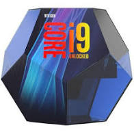

Un processeur (ou unité centrale de traitement, UCT, en anglais central processing unit,CPU)
est un composant présent dans de nombreux dispositifs électroniques
qui exécute les instructions machine des programmes informatiques.
Avec la mémoire, c'est notamment l'un des composants qui existent
depuis les premiers ordinateurs et qui sont présents dans tous les ordinateurs.
Un processeur construit en un seul circuit intégré est un microprocesseur.